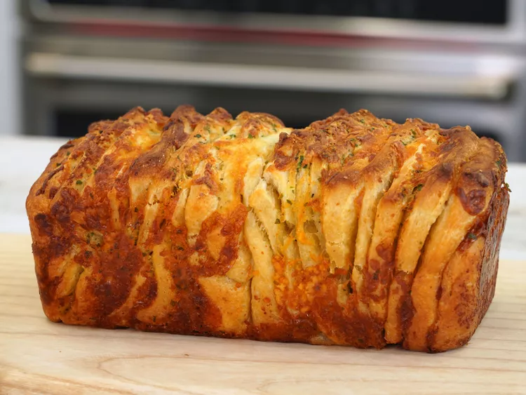

Cheesy Garlic Bread

Ingredients
- cooking spray
- 1 stick salted butter, softened
- 2 tablespoons fresh chopped herbs, such as basil and/or parsley
- 2 (11-oz package) refrigerated French bread loaf dough
- 1/4 cup grated Parmesan cheese
- 2 cups shredded mozarella cheese
Step by Step Guide
- Preheat the oven to 350 degrees F ( 175 degrees C). Lightly coat an 8.5 to 9 inch loaf pan with cooking spray.
- Combine butter, garlic, and herbs in a medium bowl and stir until well blended. Unroll 1 can of bread dough onto a flat surface. Spread half of butter mixture over the dough and sprinkle with 2 tablespoons grated Parmesan cheese and 1 cup of mozzarella. Cut the dough into 12 squares. Repeat with remaining dough, butter, and cheeses.
- Stack the dough squares on top of each other and arrange them in the prepared baking dish.
- Bake in the preheated oven until golden brown and cooked through in the center, 40 to 50 minutes. If bread becomes too dark, loosely cover with foil halfway through baking.
- Allow bread to cool about 5 minutes before removing the loaf to a serving tray.
- Annihilate
Back to Top
Back to Homepage